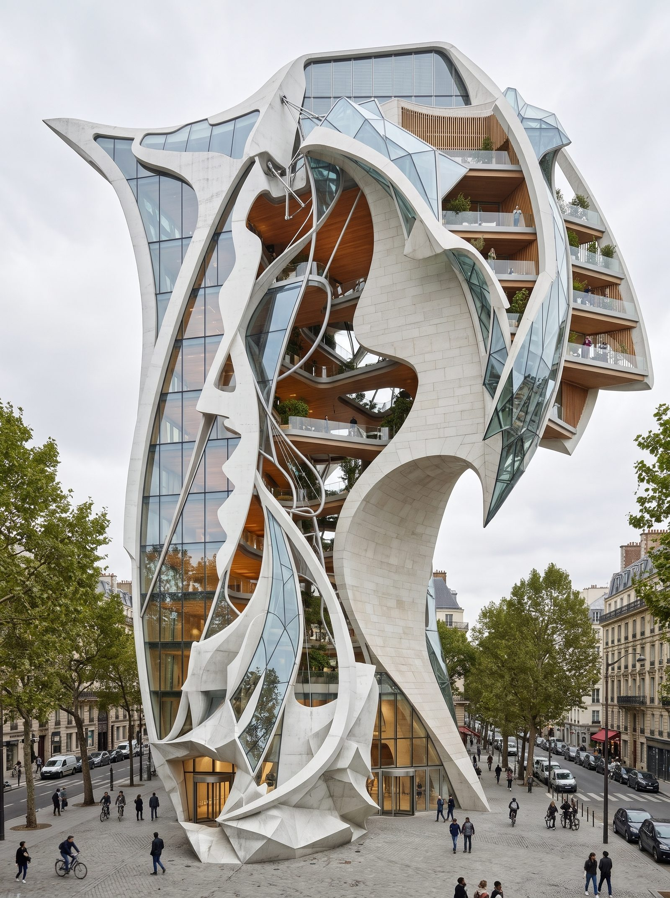
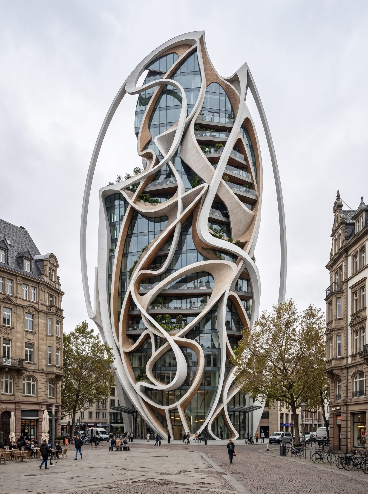
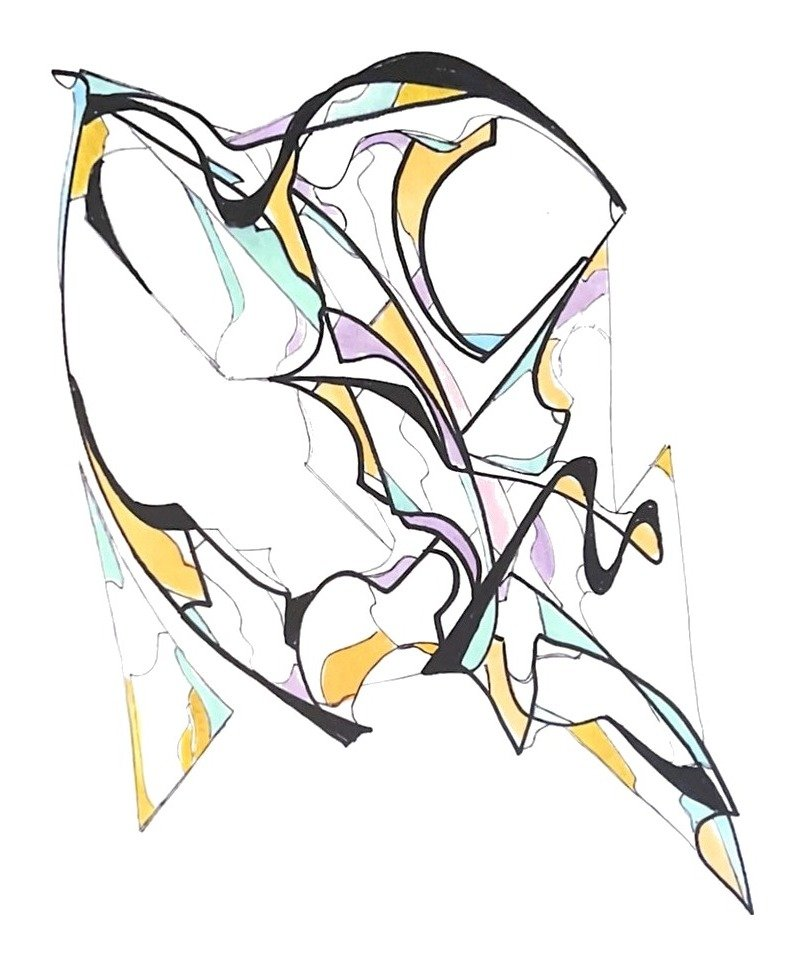
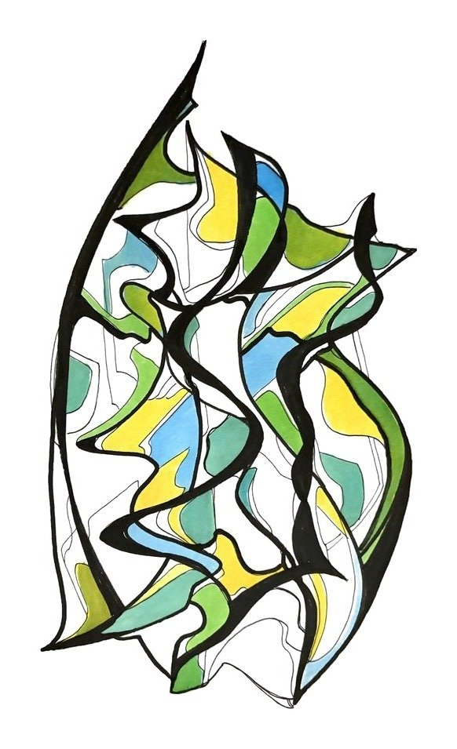
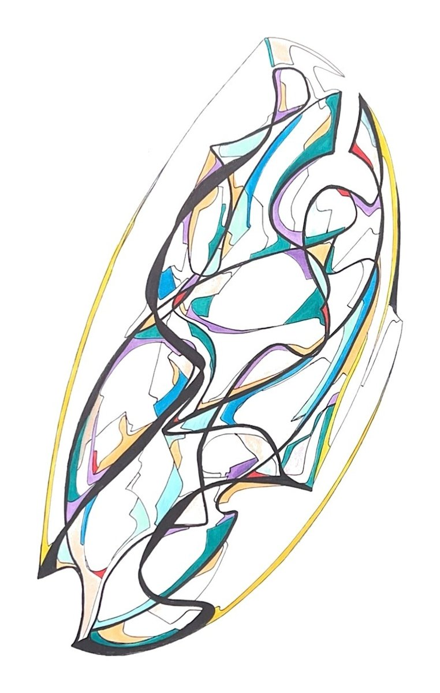

Todas las obras de esta sección están generadas con inteligencia artificial, pero cada una empieza con un dibujo a mano. Primero Arthemii hace un dibujo sobre papel; muchos de ellos pueden verse en la sección Dibujos. Después, la arquitectura se genera a partir de ese dibujo original, sin pedir que se distorsione. Es posible porque el dibujo es, en esencia, gráfica: un esquema claro a través del cual se visualiza la arquitectura.


Cómo se hace
Del dibujo al edificio
Cada edificio de esta sección empieza como un dibujo de línea libre sobre papel. La línea se traza de forma intuitiva, sin boceto previo, plano ni encargo, y el dibujo terminado es una gráfica clara: un esquema de curvas, cintas y espacios cerrados. Esa gráfica es la partitura a partir de la cual se genera la arquitectura.
01
Dibujo de línea libre
Cada concepto empieza a mano, sobre papel. La línea se traza de forma intuitiva, sin boceto previo, plano ni encargo.
02
Girado y leído como estructura
El dibujo se gira hasta que se sostiene como edificio y se lee como estructura: las líneas se convierten en cintas y marcos; las formas cerradas, en salas, terrazas y vacíos. El dibujo en sí no se modifica.
03
Render
Después, el dibujo se visualiza como arquitectura con IA generativa, sin pedir que se distorsione. El software da a las líneas escala, material, luz y contexto; la forma en sí procede del dibujo a mano.
Ejemplo: Concepto 01, generado a partir del dibujo de línea libre n.º 24 girado 180°.
Cada edificio nace de un dibujo
Aquí cada edificio aparece junto al dibujo del que salió, girado igual que en el render. Nada se redibuja: las curvas del dibujo en papel pueden seguirse línea a línea en el edificio.
→
Concepto 01Dibujo de línea libre n.º 24girado 180°
→
Concepto 02Dibujo de línea libre n.º 17girado 90°
→
Concepto 03Dibujo de línea libre n.º 18girado 90°

→
Concepto 04Dibujo de línea libre n.º 24girado 90°
→
Concepto 05Dibujo de línea libre n.º 32tal como se dibujó

→
Concepto 06Dibujo de línea libre n.º 38girado 90°
→
Concepto 07Dibujo de línea libre n.º 26tal como se dibujó

→
Concepto 08Dibujo de línea libre n.º 19tal como se dibujó
Un dibujo, tres edificios
Los conceptos 09, 11 y 12 nacen del mismo dibujo de línea libre n.º 29. Girado 270°, se convierte en los conceptos 09 y 11; tal como fue dibujado, en el concepto 12.
Dibujo de línea libre n.º 29→
Concepto 09Concepto 11Concepto 12
Principios del método
La mano sigue siendo la autora
La forma se decide sobre el papel. El software visualiza el dibujo; no inventa el edificio a partir de un texto.
Sin distorsión
Los renders conservan las proporciones y las curvas del dibujo; nada se estira ni se redibuja para encajar en un edificio.
Girar, no redibujar
Un dibujo puede leerse derecho, al revés o de lado. Girarlo 90°, 180° o 270° es el único cambio antes de que se convierta en arquitectura.
Un dibujo, muchos edificios
El mismo dibujo, girado de otra forma o situado en otro entorno, puede dar lugar a varios edificios distintos.
De la vidriera a la arquitectura
Los dibujos comparten su lenguaje con las vidrieras: líneas que enmarcan la luz. En los edificios se convierten en cintas estructurales con luz y vegetación entre ellas.
Free Line Architecture es una serie de investigación, no un encargo. Se pregunta cómo la libertad de una línea dibujada podría inspirar futuras fachadas, estructuras públicas y espacios llenos de luz.
Pequeña arquitectura
Gótico biónico en la pequeña arquitectura
Renders digitales y estudios en movimiento donde la arquitectura gótica y abstracta se funden en formas biónicas: las ideas detrás del vidrio, exploradas antes de construirse.